Âge du Fer
Études à relire — encre et aquarelle. Cliquer sur un dessin pour voir son original.
Minerai de fer
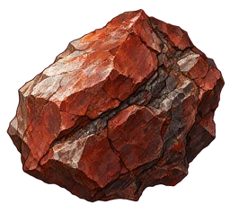
48 px 32 px
fer_min · 24,592 octetsBas-fourneau
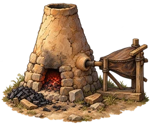
48 px 32 px
bas_fourneau · 25,214 octetsLoupe de fer
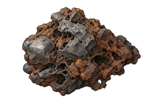
48 px 32 px
loupe · 14,556 octetsLingot de fer
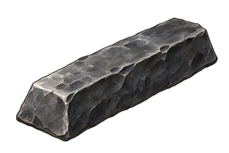
48 px 32 px
lingot_fer · 9,636 octetsPlaque de fer
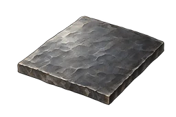
48 px 32 px
plaque_fer · 9,080 octetsClous
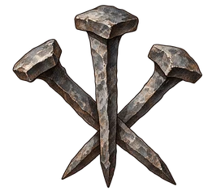
48 px 32 px
clous · 18,714 octetsChaîne de fer
48 px 32 px
chainon · 11,648 octetsOutils de fer
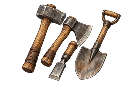
48 px 32 px
outils_fer · 16,648 octetsGalerie étayée
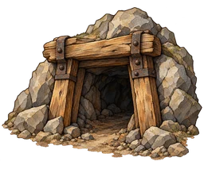
48 px 32 px
galerie · 23,390 octetsPalan à chaîne
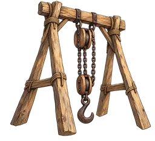
48 px 32 px
palan · 27,290 octetsEnclos d’élevage
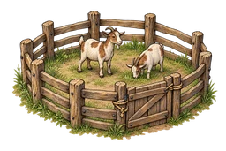
48 px 32 px
enclos · 23,836 octetsVerre
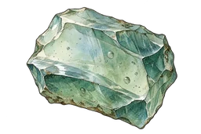
48 px 32 px
verre · 14,490 octetsPoudre de quartz
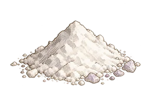
48 px 32 px
poudre_quartz · 13,476 octetsLentille
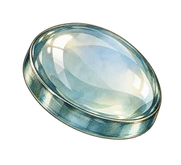
48 px 32 px
lentille · 14,586 octetsLunette astronomique
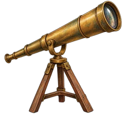
48 px 32 px
lunette · 18,110 octetsBrique réfractaire
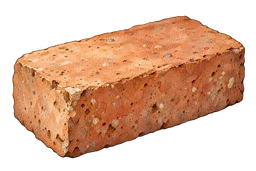
48 px 32 px
brique_refr · 17,144 octetsChariot
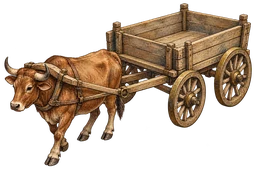
48 px 32 px
chariot · 20,462 octetsTamis du désert
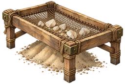
48 px 32 px
tamis · 26,722 octetsQuartz
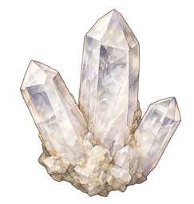
48 px 32 px
quartz · 19,034 octetsRésonite
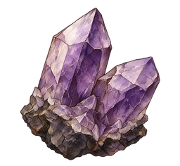
48 px 32 px
resonite · 18,826 octetsDiapason
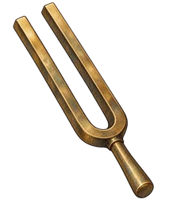
48 px 32 px
diapason · 11,098 octetsCuriosités et relique — ouvrir pour la revue artistique
Boussole
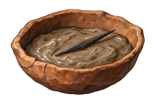
48 px 32 px
boussole · 15,182 octetsPigment
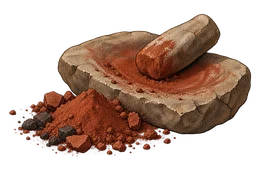
48 px 32 px
pigment · 17,468 octetsVieille partition
48 px 32 px
partition · 18,900 octetsProduction individuelle par ImageGen intégré. Prompts exacts : prompts.json. Lot de revue séparé du jeu.